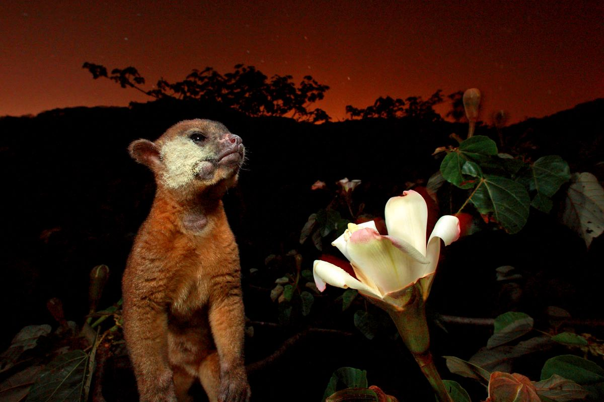

Christian Ziegler is an internationally photojournalist specializing in natural history and science-related topics.
He is a regular contributor to National Geographic Nagazine, and has been widely published in leading publications.
Using engaging, informed story telling. Christian's aim is to highlight species and ecosystems under threat and share
their beauty, and importance with a broad audience.
